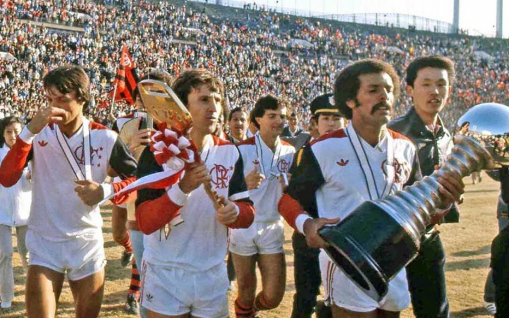
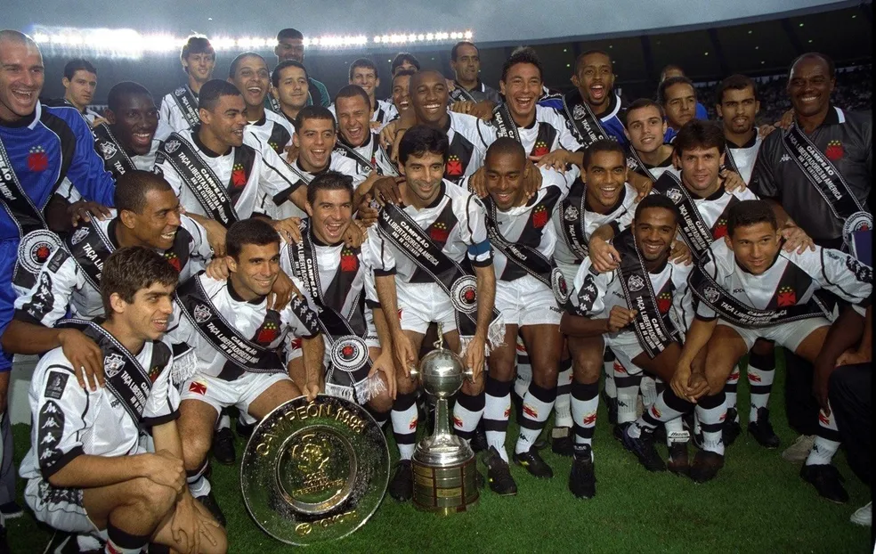
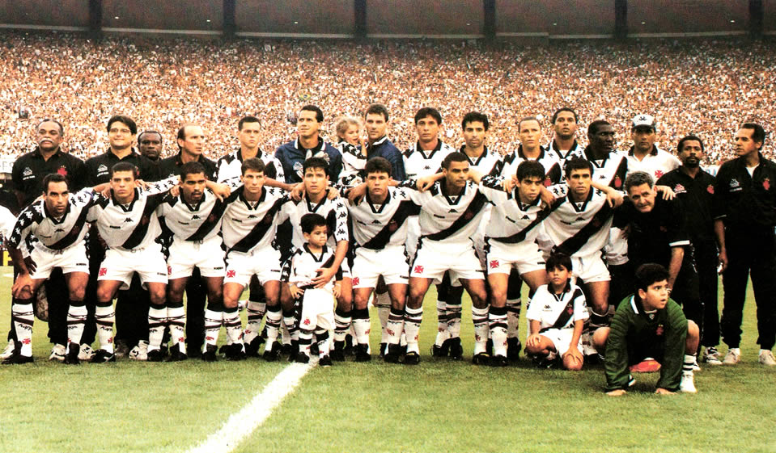

Momentos históricos do Flamengo
Galeria apresentada por Nickolas Levy, torcedor número um do Flamengo.
Na imagem acima podemos ver a conquista do mundial em 1981, O Flamengo, campeão sul americano ganhou de 3 a 0 do poderoso time do Liverpool, campeão europeu nesse exato ano, se consagrando campeão mundial pela primeira vez na sua história.

Acima podemos ver o primeiro time de futebol da história do Clube de Regatas do Flamengo.
Acima podemos ver o elenco de 2019 do Clube de Regatas do Flamengo, o time mais vencedor da história da CRF.
Curiosidades sobre o Flamengo
1. O Flamengo foi fundado em 17 de novembro de 1895, mas a data oficial da fundação foi alterada para 15 de novembro, feriado nacional da Proclamação da República. Seis jovens moradores do bairro queriam disputar remo com outros rapazes do Rio de Janeiro e por isso decidiram criar o como Grupo de Regatas do Flamengo, rebatizado como Clube de Regatas do Flamengo, em 28 de outubro de 1902.
2. As cores originais do Flamengo eram azul e amarelo ouro. A mudança para o preto e vermelho aconteceu cerca de um ano depois da fundação do clube e por um motivo bastante prosaico: os caros tecidos importados desbotavam facilmente na água e precisaram ser substituídos.
3. A equipe de futebol do Flamengo foi criada em decorrência de uma desavença em seu rival Fluminense, em 1911. O atleta Alberto Borgerth, que jogava futebol no Fluminense e remava no Flamengo, propôs a criação de uma seção de futebol no clube de regatas e foi assim que nasceu o Departamento de Esportes Terrestres.
4. O mascote do Flamengo foi adotado em resposta a uma provocação racista que as outras torcidas faziam com o time, que tinha grande número de negros entre os torcedores. Quando o time entrava em campo, as torcidas adversárias gritavam “urubu, urubu”. Para transformar a ave em uma afronta aos adversários, um grupo de 4 amigos flamenguistas decidiu, então, soltar um urubu com uma bandeira do time em um clássico contra o Botafogo, em 1º de junho de 1969. Como se tivesse sido ensaiado, o urubu sobrevoou as torcidas e pousou sobre o gramado com a bandeira, calando a torcida do Botafogo e sendo ovacionado pelos flamenguistas: “é urubu, é urubu”. O time venceu a partida e nunca mais deixou o mascote.
5. O Flamengo tem, até o momento, em seu currículo 8 Campeonatos Brasileiros, conquistados em 1980, 1982, 1983, 1987, 1992, 2009, 2019 e 2020. O time ainda conta com o Mundial de 1981 e três Taças Libertadores da América, em 1981, 2019 e 2022.
Momentos históricos do Vasco
Galeria apresentada por Deny Darga, torcedor número um do Vasco.
Na imagem podemos ver o elenco do Vasco Campeão da Libertadores de 1998, que ganhou o título em cima do elenco forte do Barcelona de Guayaquil.

Na imagem acima podemos ver o primeiro Elenco da história do Vasco.
Esse foi o elenco mais vencedor de um único ano do Vasco, conquistando o Campeonato Carioca, a Copa Mercosul, Copa João Havelange e a Supercopa Sul-Americana em 1997.
Curiosidades sobre o Vasco.
1. A inspiração para o nome do clube e seu principal símbolo, a cruz vermelha, foi o aniversário de 400 anos da descoberta do caminho marítimo para as Índias, percorrido pela primeira vez em 1498 pela expedição marítima liderada por Vasco da Gama. Na ocasião, as embarcações levavam a cruz desenhada em suas velas.
2. Uma das curiosidades sobre o Vasco envolve justamente a cruz que simboliza o clube. Embora ela seja chamada de Cruz de Malta no hino do time, na verdade, a que era usada pela frota de Vasco da Gama, que inspirou os fundadores do clube, é a Cruz da Ordem de Cristo. O nome Cruz de Malta se refere a outro tipo de cruz heráldica, que são todas as que têm pontas iguais e abertas, incluindo a do símbolo do Vasco.
3. A primeira sede do clube foi um sobrado alugado provisoriamente em frente ao Largo da Imperatriz, na região central da cidade do Rio de Janeiro (RJ), onde nasceu a primeira escola para a prática de remo da cidade. Depois de 3 meses, o clube passou para a sede oficial, na Praia Formosa, antiga Ilha das Moças.
4. A escolha do primeiro uniforme do Vasco foi feita 2 semanas depois da fundação do clube. Ficou decidido que a camisa seria preta com a gola branca e teria a cruz encarnada no peito. O calção seria preto. Só mais tarde foi inserida a faixa branca na diagonal, que simboliza o caminho das Índias.
5. Um dos grandes diferenciais do Vasco desde a sua fundação era aceitar representantes das classes mais pobres, incluindo negros e comerciantes, algo que não acontecia nos outros clubes bem mais elitistas. Para que essas pessoas pudessem se dedicar ao esporte, foi preciso driblar a lei do amadorismo, que impedia pagar salários aos jogadores. A solução foi contratar os atletas como funcionários dos comerciantes portugueses.